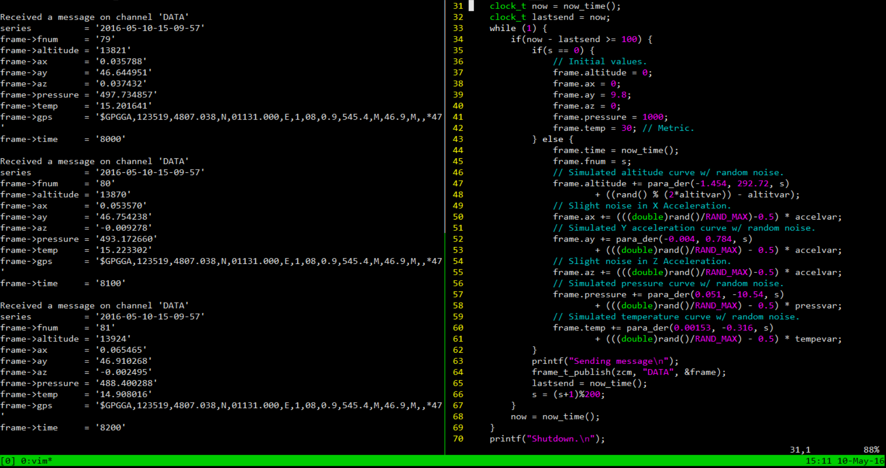
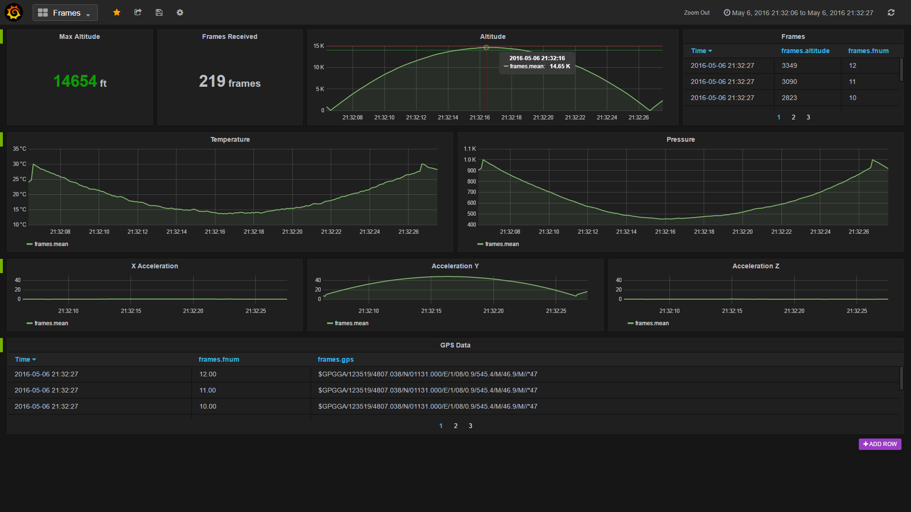

RIT Launch Initiative
As a member of the RIT Launch Initiative, I have been working to develop the communications software for retrieving and analyzing data from a 12 foot rocket that will be launched 10,000 feet into the air.
ZCM Transport Layer for Embedded Character Devices

- A transport layer for the ZCM Communication Framework used to write messages over a standard POSIX character device.
- Can be used to communicate between the two devices, independent of how the devices are connected.
- Provides a standard way to communicate telemetry data from the RTOS on the rocket to the ground control PC.
Influxdb / Grafana Data Analytics System

- Used to provide a flexible way to visualize data sent from the rocket in near-realtime.
- Installed and configured as a system for demo and testing purposes.
- Uses modern web technologies to provide an easily accessible system.